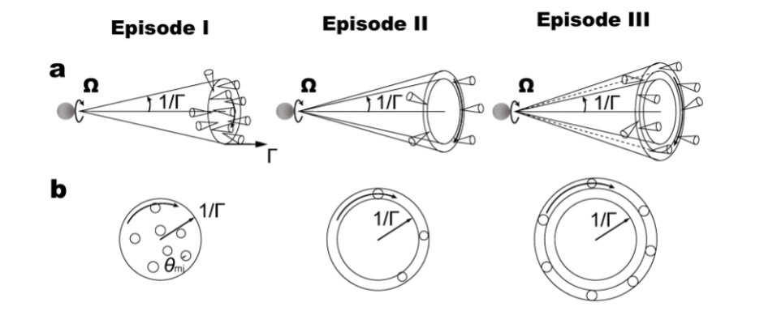
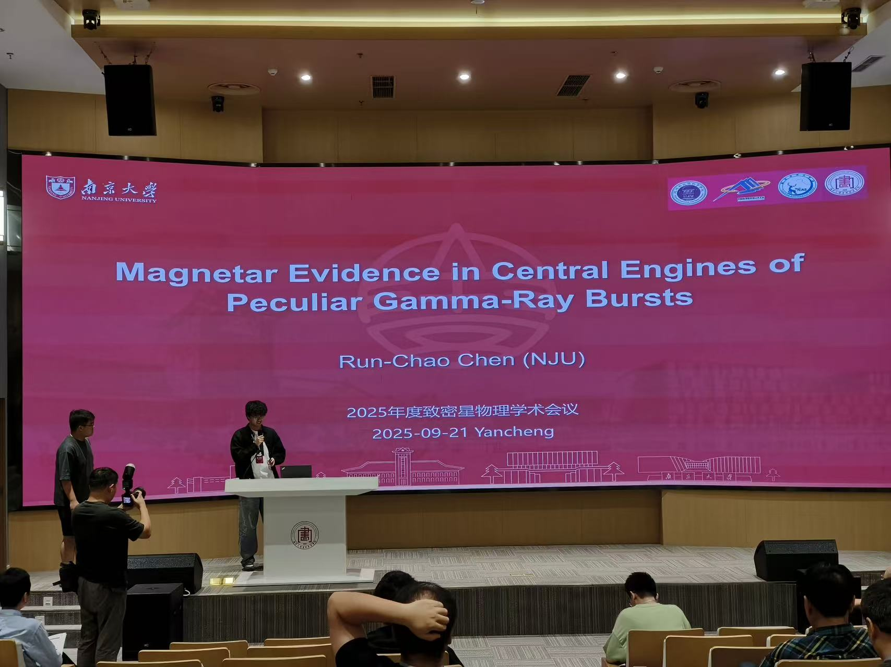
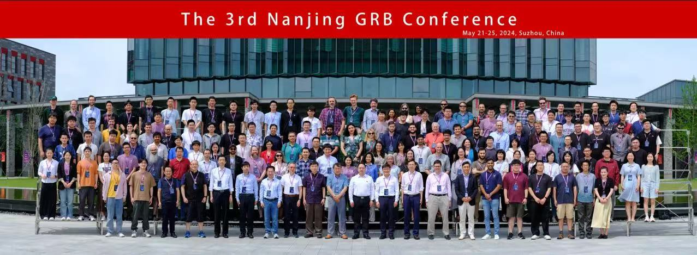

About
I am a PhD student in astrophysics at Nanjing University.
My research focuses on high-energy astrophysical transients,
particularly gamma-ray bursts and magnetar-related phenomena.
My work involves the analysis of temporal variability,
quasi-periodic oscillations, and multi-wavelength observations.
Email:
chrczxx@smail.nju.edu.cn
ORCID:
https://orcid.org/0009-0009-2083-1999
Research
A long-standing question in high-energy astrophysics is
what kind of compact object is formed after a neutron-star merger,
and whether its physical nature can be directly imprinted in the prompt
emission of a gamma-ray burst.
While short gamma-ray bursts are commonly attributed to merger-driven
relativistic jets, direct observational evidence for the central engine
has remained elusive due to the extreme distance and short duration
of these events.
Our recent research, closely related to my interests in time-domain
astrophysics, focuses on searching for rapid temporal structures in
gamma-ray burst prompt emission.
By analyzing high time-resolution gamma-ray data from missions such as
GECAM and Fermi/GBM, we identified a short-lived,
millisecond-timescale periodic signal in the exceptionally bright
GRB 230307A.

The detected signal has a central frequency of
approximately 909 Hz and lasts for about 160 milliseconds,
making it the first stable millisecond periodicity ever observed in a
gamma-ray burst.
Independent confirmation using multiple detectors demonstrates that
the signal is coherent in time, frequency, and energy, firmly associating
it with the burst itself.
This observation is naturally explained if the merger remnant is a
rapidly rotating millisecond magnetar.
In this scenario, the detected 909 Hz signal directly reflects the
spin frequency of the newborn compact object, making it a rare case
where the intrinsic rotation of a GRB central engine is imprinted
in the prompt gamma-ray emission.
Crucially, the appearance of the periodic signal does not require a
long-lived or globally coherent modulation.
Instead, our interpretation emphasizes the combined role of
anisotropic emission geometry and
high-latitude emission during a brief evolutionary
stage of the relativistic outflow.
When the prompt emission becomes dominated by radiation from higher
latitudes, geometric asymmetry allows the magnetar's rotational
modulation to momentarily survive relativistic time-smearing effects
and emerge as an observable quasi-periodic oscillation.

As the emission region evolves, increasing geometric symmetry and
overlapping emission from different angles rapidly wash out the
periodic signature, naturally explaining the short duration
(~160 ms) of the signal.
In this picture, the transient nature of the QPO is a geometric and
relativistic effect, rather than a rapid change in the intrinsic
engine activity.
More broadly, this line of research links magnetar spin, relativistic jet geometry, and
high-latitude emission in a self-consistent way, demonstrating that
millisecond timing analysis can provide a direct observational probe
of the central engine formed in compact-object mergers.
Related research briefings and news coverage:
Publications
2025
-
Evidence for a brief appearance of gamma-ray periodicity after a compact star merger
Nature Astronomy, 2025
Run-Chao Chen et al.
DOI: 10.1038/s41550-025-02649-w
-
Spectral Hardening Reveals Afterglow Emergence in Long-duration Fast X-Ray Transients:
A Case Study of GRB 250404A/EP250404a
The Astrophysical Journal Letters, 2025
Yi-Han Iris Yin et al.
(Run-Chao Chen: contributing author)
DOI: 10.3847/2041-8213/adf552
2024
-
Triggering the Untriggered: The First Einstein Probe-detected Gamma-Ray Burst 240219A
and Its Implications
The Astrophysical Journal Letters, 2024
Yi-Han Iris Yin et al.
(Run-Chao Chen: contributing author)
DOI: 10.3847/2041-8213/ad8652
-
Repeated Partial Disruptions in a White Dwarf–Neutron Star or White Dwarf–Black Hole Merger
Modulate the Prompt Emission of Long-duration Merger-type GRBs
The Astrophysical Journal Letters, 2024
Junping Chen et al.
(Run-Chao Chen: contributing author)
DOI: 10.3847/2041-8213/ad7737
-
A Comptonized Fireball Bubble Fits the Second Extragalactic Magnetar Giant Flare GRB 231115A
The Astrophysical Journal Letters, 2024
Yi-Han Iris Yin et al.
(Run-Chao Chen: contributing author)
DOI: 10.3847/2041-8213/ad2839
2023
-
Detection of Quasi-periodic Oscillations in SGR 150228213
Research in Astronomy and Astrophysics, 2023
Run-Chao Chen et al.
DOI: 10.1088/1674-4527/acdabe
Moments
Selected moments from academic life.

The 2025 Annual Conference on Compact Star Physics (September 19-23, 2025,
Yancheng, Jiangsu, China). I gave an oral presentation reporting the
detection of a 909 Hz quasi-periodic oscillation in GRB 230307A.

The 3rd Nanjing Gamma-Ray Burst Conference (May 20-25, 2024, Suzhou, Jiangsu, China).
I served as a volunteer member of the Local Organizing Committee and
acted as a guide during the ice-breaking event. During the conference,
I also presented a poster briefly introducing my work on magnetar hard X-ray burst
SGR150228213.